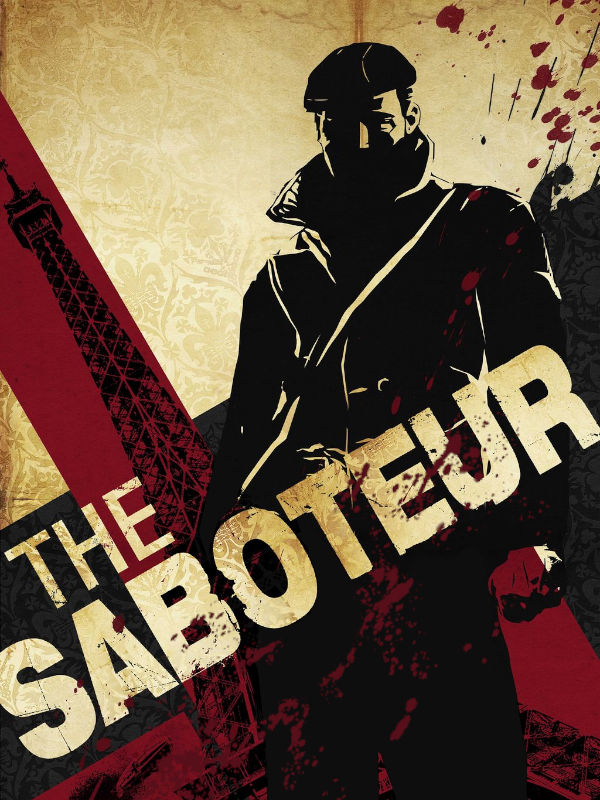

The Saboteur
The Saboteur
Details
|  | |
| Playtime | Not Played |
| Last Activity | Never |
| Added | 19/04/2024 17:04:02 |
| Modified | 18/05/2025 0:02:52 |
| Completion Status | Not Played |
| Library | Steam |
| Source | Steam |
| Platform | PC (Windows) |
| Release Date | 04/12/2009 |
| Community Score | 72 |
| Critic Score | 78 |
| User Score | |
| Genre | Adventure Role-playing (RPG) Shooter Tactical |
| Developer | Pandemic Studios |
| Publisher | Electronic Arts |
| Feature | Single Player |
| Links | Official GOG Wikipedia Twitch Steam |
| Tag | Action Adventure Atmospheric Classic Controller Noir Nudity Open World Parkour Sexual Content Singleplayer Stealth Third Person War World War II |
Description
Not all wars are fought on the open battlefield. Download The Saboteur to visit 1940s Nazi-occupied Paris, as you play tough Irish racecar mechanic Sean Devlin. Working with the French Resistance, Sean is out for revenge against ruthless Nazi Colonel Kurt Dierker, who executed Sean’s best friend.
This open-world action thriller takes you through the seedy streets of Paris as you seek to undermine the German authority and lead a rebellion. Fight across rooftops and through dangerous alleys, and operate a wide variety of vehicles as you navigate your terrain. You can even climb the Eiffel Tower or Notre Dame Cathedral for a sniping mission.
Use stealth and disguise to strike at the heart of the Nazi war machine by disabling trains, destroying bridges, and blowing up enemy facilities. As you work to remove the oppressive forces from parts of the city, the drab black-and-white palette gives way to bright colors, signifying that you’ve inspired the townspeople. The more you incite the people, the more they’ll aid you by intervening in fights or providing a quick getaway from pursuing Germans. The Saboteur presents a fresh take on World War II and features dramatic cinematic elements. The action and intrigue is yours to experience via download on the PC now.
Key features:
This open-world action thriller takes you through the seedy streets of Paris as you seek to undermine the German authority and lead a rebellion. Fight across rooftops and through dangerous alleys, and operate a wide variety of vehicles as you navigate your terrain. You can even climb the Eiffel Tower or Notre Dame Cathedral for a sniping mission.
Use stealth and disguise to strike at the heart of the Nazi war machine by disabling trains, destroying bridges, and blowing up enemy facilities. As you work to remove the oppressive forces from parts of the city, the drab black-and-white palette gives way to bright colors, signifying that you’ve inspired the townspeople. The more you incite the people, the more they’ll aid you by intervening in fights or providing a quick getaway from pursuing Germans. The Saboteur presents a fresh take on World War II and features dramatic cinematic elements. The action and intrigue is yours to experience via download on the PC now.
Key features:
- First Ever Open-World Paris — Climb the Eiffel Tour, snipe from Notre Dame Cathedral, and brawl on the Champs d’Elysee as you sabotage your enemies. Fight, climb, and prowl through the dark alleys, rooftops, burlesque houses, and seedy streets of the City of Lights — the ultimate playground for the Saboteur.
- The Art of Sabotage — Being the Saboteur is all about attacking while staying unnoticed. Get your mission intel at underground clubs and cabarets. Eliminate your adversaries with stealth attacks, disguise, distractions, and explosives. Master a variety of weapons, automobiles, and skills to sabotage enemy operations.
- The Will to Fight — An action-packed experience and thrilling storyline are made even more engaging by an innovative visual style, characters, and the new “Will to Fight” technology. Experience how the city reacts and changes around you as you free it from Nazi oppression. Only you can restore hope and grandeur to Paris.
- French Resistance Strikes — Call for support from The Underground in the form of getaway cars, weapon deliveries, distractions, and much more.